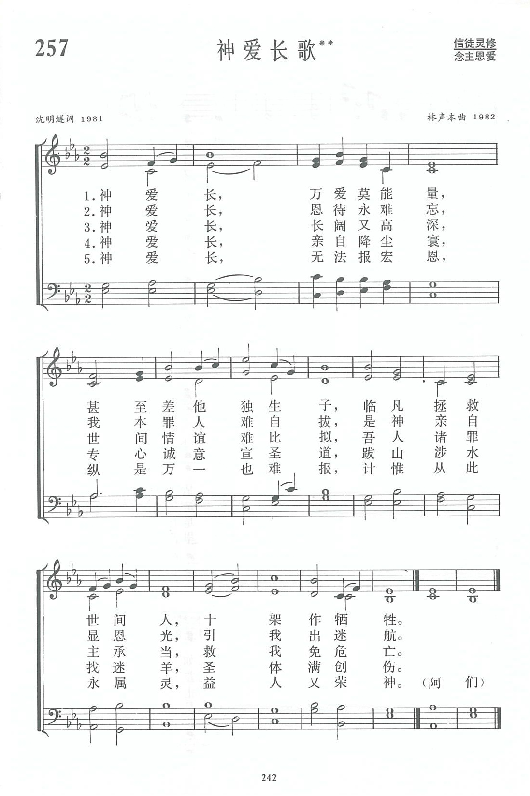

|
|
讚美詩(新編) |
|
|
1.天父帶領我們教會，自治、自養、自傳，煥發主光輝； |
|
https://www.zanmeishige.com/tab/13930.html?songbook=1&index=257
 |
|
|
|
|

https://www.youtube.com/watch?v=-bpG9X65c5Q
第127首 我爱中国教会歌** _史奇珪 God our Father, lead our church on
经文：“身体只有一个，圣灵只有一个，正如你们蒙召，同有一个指望。一主，一信，一洗，一神”(弗4：4—5)。
在《新编》收集的新创作诗歌中，这是各地信徒普遍唱颂的一首。
这首诗产生的过程是这样的：沐恩堂是处于上海闹市的一所大礼拜堂，拨乱反正以后，1979年在该市首先恢复礼拜。1981年该堂筹备召开本区(黄浦区)基督教代表大会，有信徒提出在举行开幕礼拜时，最好有一首赞美诗，可以唱出当今中国基督徒热爱教会的感情。在沐恩堂工作了半辈子的史奇珪牧师(简历参阅第9首)亲身经历这个堂的巨大变化，也深有同感，觉得义不容辞，经过祷告与思考，便写下了这首诗。当时只有一节，即现在的第一节。谱曲以后，先教唱诗班内几位学唱，在开幕礼拜时献唱。
唱诗班人员孙定武弟兄那天献唱完毕以后，被这首诗抓住了，在回家的路上反复哼唱。他回想起十年动乱期间，每晚临睡前祷告中第一个祈求，就是求神复兴中国的教会；1979年9月2日沐恩堂复堂礼拜，听到牧师领祷时，如何禁不住流出眼泪的情景，更感到这首诗确是谱出了中国教会新的一页。他觉得这首诗的曲调十分有力，动听，并且容易学习。美中不足之处就是太短了一些，言犹未尽，如能添上几节，肯定会成为一般信徒都爱唱的一首赞美诗。几天以后他告诉史牧师他有感动再写几节歌词，这本是史牧师想做而没有来得及做的，当然竭力鼓励。这样，这首诗便丰富起来了。当《新编》编辑工作开始以后，同工们发现了这首诗，便要求他们二人重新综合整理而定稿。
这首诗的特点在于它比较集中地反映了我国教会的时代特点。譬如：
一、我国教会得到神的特别带领与恩待。
我国教会人数不多，几经沧桑，在解放前不能独立自主，十年动乱又受到冲击与逼迫，但我国教会却能复兴而兴旺，这完全是出于神的带领、眷顾、赐福、恩待。这首诗的首句就表达了这个基本含义。
二、教会以耶稣为元首。
这首诗副歌的首句原为“我爱中华三自教会”，后改为“我爱中国基督教会”；因教会属于神，必须靠主来治理。“自治、自养、自传”是神带领中国教会所遵循的方向与原则，目的乃为“焕发主光辉”。三自的“自”是对教会过去受外国控制的局面而言，决不是如有些人所说的，是向神闹“独立”．
三、不强调教派，走联合的道路。
诗中所提的“一主、一信、一洗’，“同心合意”，“彼此相爱”，都是圣经教训，也是中国教会这些年来在圣灵带领下所努力推进的目标。我们一定要竭力保守合而为一的心。
四、教会是“金灯台”。
信徒需有了荣神益人”的见证。在我们的讲台上经常提到的信徒要“作光作盐”，教会要“得众民的喜爱”，在这首诗中都体现出来。
五、教会要“传扬基督、高擎十架”，相信“主永远与我们同在”。
这个结尾落实于我们对教会的前途充满信心与盼望。
有人对这首诗的题目曾经提出一个问题：普世的教会都是基督的身体，信徒都该爱，为什么要特别强调“我爱中国基督教会”?对此，词作者孙定武有一段很好的体会。他说：“神把我们安排在一定的时间、空间中生活，每个人对周围的事物，如自己的祖国、家乡、家庭、亲属、朋友、同事，总有一个特定的感情，我们在某一个教会里敬拜神，对这个教会和其中的肢体总感到特别亲密。中国基督徒爱中国教会是很自然的感情流露。当然，首先是出于对主的感情，这并不意味着我们对外国的教会不爱、不交通、不来往。但是，如果我们对于看得见的、处身于其中的中国教会不爱，怎么能说我们是爱众教会呢?”
这首诗的曲调采用4／4进行曲式，唱时使人产生振奋、前进的情绪，形象地表示中国教会在迈进。同时，它仍具有传统赞美诗的格律。特别是副歌“我爱中国基督教会”，这句“爱”字停在最高的音上面，且延长时值，很能唱出发自内心的真情。
由于这首诗在词与曲方面有上述特点，特别适用于隆重的礼拜场合。当我国基督教举行全国会议，在各省市自治区举行基督教代表会议，或三自爱国运动周年纪念日活动时，大家往往选唱它。“我爱中国基督教会”的歌声如大水的声音，感人至深。我们应该为两位作者合作写出这首圣诗感谢上主。